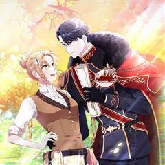
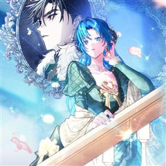

카카오웹툰 추천 인기 순위 TOP 30
카카오웹툰에서 지금 연재 중인 작품을 카카오웹툰 공식 인기 순위 순서로 모았어요. 네이버웹툰·카카오웹툰·레진코믹스에서 조건에 맞는 작품 944개 중 인기 순으로 30개를 골랐어요. 인기 TOP 3: 천하제일인의 소꿉친구, 이번 생은 가주가 되겠습니다, 철혈검가 사냥개의 회귀
2026-10-05 기준 · 성인 작품 제외
내 취향으로 더 좁혀서 추천받기 →-
1
 카카오웹툰
카카오웹툰천하제일인의 소꿉친구
정파를 배신하고 천마 휘하의 마인이 되어 버린 구양천. 마인으로서 살아가며 천마의 명으로 본인의 의지와는 상관없이 수많은 악행을 저지르고 후회로 점철된 인생을 살아가게 된다. 천마가 일으킨 정마대전. 정파의 삼존 존재마저 무릎을 꿇린 천마를 베어낸 위설아로 인해 길고 길었던 지옥 같은…
액션하렘카카오웹툰에서 보기 → -
2
 카카오웹툰
카카오웹툰이번 생은 가주가 되겠습니다
“…한번 해 보자. 내가 가주가 되는 거야.” 제국에서 제일가는 가문, 롬바르디의 사생아로 환생한 피렌티아. 게다가 이 가문은 막대한 부는 물론 외교와 문화까지 통달한 말그대로 제국의 역사 자체! 금수저 오브 금수저 인생 당첨! 앞으로는 탄탄대로일 거라 생각했는데…. 아버지는 돌아가시…
사이다로판회귀카카오웹툰에서 보기 → -
3
 카카오웹툰
카카오웹툰철혈검가 사냥개의 회귀
바스커빌 가문의 사냥개 '비키르'. 사냥개로서 가문에 충성한 보답은 모함과 누명으로 얼룩진 단두대의 칼날이었다. "다시는 토끼를 잡고 나면 삶아지는 사냥개처럼 살지 않겠노라." 그런 그에게 죽음 대신 찾아온 뜻밖의 기회. 어둠 속에서 송곳니를 갈고닦는 비키르의 눈이 붉게 빛났다. "기…
학원물복수극카카오웹툰에서 보기 → -
4
 카카오웹툰
카카오웹툰그 쓰레기가 나였어요
역하렘 연애 육성 게임에 빙의했다. 온갖 악행을 저지르다 처단당하는 악녀, F-등급의 튤리아 프레지어로. “이렇게 끔찍한 스탯으로 살아남는 게 가능해?” “이 건방진 말투는 뭐야?!” 돈도 없고 운도 없고 모두에게 미움받으며, 아무도 날 사랑하지 않는다지만… 목숨을 부지하기 위해서 모…
사이다설렘폭발로판빙의카카오웹툰에서 보기 → -
5
 카카오웹툰
카카오웹툰템빨
[신영우 (유저 네임: 그리드)] 세계 최고의 가상 현실 게임 <SATISFY>. 현실에서나, 게임 속에서나, 불운은 항상 그의 곁을 맴도는데.... 퀘스트 수행 중 우연히 발견한 게임 속 로또, '파그마의 기서'. 20억 명이 넘는 유저 중 유일한 최강의 레전드리 직업으로 전직. "…
사이다학원물게임판타지카카오웹툰에서 보기 → -
6
 카카오웹툰
카카오웹툰검술명가 막내아들
진 룬칸델 대륙 최고의 검술명가, 룬칸델의 막내아들 룬칸델 역사상 최악의 둔재 비참하게 쫓겨나 허무한 최후를 맞이한 그에게 다시 한 번 기회가 주어졌다. “너는 이 힘을 어떻게 사용하고 싶더냐?” “저를 위해 사용하고 싶습니다.” 전생의 기억과 압도적인 재능, 그리고 신과의 계약 최강…
액션회귀카카오웹툰에서 보기 → -
7
 카카오웹툰
카카오웹툰창귀무쌍
평생 전장 만을 활보하며 살아온 늙은 노병 '추이'는 자신이 죽여 온 자들의 원념에 사로잡혀 죽음에 이른다. 추이가 다시 눈을 떴을 때, 이유는 알 수 없지만 아직 무공도 배우지 못하고 쟁자수로 일하던 어린 시절로 회귀해 있었다. 다시 돌아온 추이는 전생의 인연인 호예양을 떠올리며 호…
자극적인액션복수극카카오웹툰에서 보기 → -
8
 카카오웹툰
카카오웹툰일어나지 않은 것들에 관하여
천 년 만에 용을 살해한 슬레이어, 종전을 이끈 영웅 도미닉. 그는 왕의 견제로 인해 보상 대신 후궁 아델하이드의 호위 기사로 임명받는다. 그러나 아델하이드에게는 추문이 있다. 현재 제 나라를 멸망시킨 왕의 후궁으로 산다는 것. 전 호위 기사들이 모두 그녀에게 마음을 주었다는 이유로…
자극적인눈물샘자극로판카카오웹툰에서 보기 → -
9
 카카오웹툰
카카오웹툰대사형 선유
삼류 낭인 곽노의 손에 거둬진 아이들. 사제관계를 맺고 아이들은 어설프게나마 무공과 보법 수련을 하며 각자의 꿈을 꾼다. 먹고살기 위해 곽노는 늘 자리를 비워야 했고, 아이들 중 맏이인 선유는 사제들을 돌봐야 한다. 그는 대사형大師兄이다.
눈물샘자극액션가족카카오웹툰에서 보기 → -
10
 카카오웹툰
카카오웹툰세이렌: 악당과 계약 가족이 되었다
아리아는 계약 결혼을 제안했다. 그것도, 악마에게 영혼을 팔았다는 발렌타인의 대공자에게. 자신을 지키고, 그를 지키기 위해서. [나와 결혼해.] 아리아는 단풍잎 같은 손으로 쪽지와 함께 혼인 서약서를 내밀었다. [계약 결혼이니까 10년 뒤에 이혼…….] 그러자 어린 대공자는 쓰고 있던…
로판회귀카카오웹툰에서 보기 → -
11
 카카오웹툰
카카오웹툰레드스톰 - 왕의 귀환
피에 젖은 사막. 붉은 사막을 용납할 수 없던 한 소년. 소년은 사막의 무신이 되어 사막을 구하지만 이제는 세계가 피에 젖으려 한다. 무신은 이제 사막을 넘어 세계를 구하려 한다. “4년 만에 돌아온 그로우, 왕의 귀환. 이제는 사막에서 전쟁을 보여줘야 할 때다.”
액션성장물카카오웹툰에서 보기 → -
12
 카카오웹툰
카카오웹툰타람 타람 타람
나긋나긋한 움직임으로 들어온 다온이 연회장 중앙에서 멈춰 섰다. 인형만큼이나 무미하고 감정 없는 얼굴이었다. 그럼에도 도도하고 우아해서 얼음 여왕처럼 강렬한 인상을 주었다. 엑서는 다리를 꼬며 낮게 웃었다. “지배자로서, 오늘 밤 널 안겠다.” 운명적인 첫 만남. 한눈에 반해버린 여자…
눈물샘자극설렘폭발로판시대물카카오웹툰에서 보기 → -
13
 카카오웹툰
카카오웹툰가드패스
평소 먹는 것을 좋아해 뚱뚱하고 큰 체격을 가진 '임세준'. 그는 뚱보라는 놀림에도 신경 쓰지 않는 자존감이 높고 확고한 성격을 가졌다. 그에게 단 한 명의 친구 '서하진'. 그녀는 어릴 적부터 세준을 지켜주기 위해 늘 운동을 배워왔다. 어느 날 세준은 같은 반 일진과 트러블이 생기고…
사이다학원물배틀카카오웹툰에서 보기 → -
14
 카카오웹툰
카카오웹툰갓 오브 블랙필드
"Who am I?" 프랑스 외인부대의 전설 '강찬'! 아프리카 전장에서 그를 상대한 자들은 공포와 경외를 담아 '갓 오브 블랙필드' 검은 땅의 신이라 불렀다. 하지만 수니파 추종 세력 SISS의 수뇌인 마살란 사살 작전에 투입된 강찬은 배후에서 날아든 의문의 총알에 전사하게 되고,…
서스펜스액션전쟁카카오웹툰에서 보기 → -
15
 카카오웹툰
카카오웹툰은해상단 막내아들
『은해상단 막내아들』 천하제일의 상재(商才)를 타고난 은서호. “어째서 무림맹이 나를…….” “맹의 윗분들께서 자네가 거슬린다고 하더군. 쯧, 그놈의 돈이 뭐라고.” 백도 무림을 자처하던 무림맹의 칼에 살해당한 나는 상단 일을 처음 배우던 날로 돌아왔고, 굳게 다짐한다. 이번 생에서는…
사이다눈물샘자극액션회귀카카오웹툰에서 보기 → -
16

-
17
 카카오웹툰
카카오웹툰용사파티 대마법사의 환생
천재마법사 린은 13살 때, 세상을 혼돈에 빠뜨리려는 거악 ‘심연’을 물리치고자 리스타를 위시한 용사파티와 함께 여행을 떠난다. 하지만 싸움은 점점 격렬해지고 마지막 순간에 린의 몸은 ‘심연’의 암독에 당해서 생명이 위태로워진다. “다시 돌아올게”라는 말을 남기고 강제 휴면 상태에 빠…
사이다환생카카오웹툰에서 보기 → -
18
 카카오웹툰
카카오웹툰괴담에 떨어져도 출근을 해야 하는구나
[ ⚠️ 해당 작품에는 공포 연출 및 폭력적·잔혹한 장면이 포함되어 있습니다. 이용에 참고 부탁드립니다. ] 소중한 연차까지 내고 갈 정도로 좋아하던 '어떤 현대판타지' 팝업 이벤트. 그리고 그날, 그 현판 속으로 빙의당했다. 무려 유명 대기업에 막 취직한 신입사원으로! 복지 좋고 연…
미스터리카카오웹툰에서 보기 → -
19

카카오웹툰전속은 곤란합니다, 공작님
전생의 기억을 떠올린 지 5년 차. 하지만 아무 일도 일어나지 않았다. “원작 그게 뭐지. 먹는 건가.” 세계관은 몰라도 먹고 사는 데는 아무 지장없다. 돈도 잘 벌지 드래곤도 쪼물거릴 수 있지! 이대로 드래곤 훈련사로 가늘고 길게 살면 좋겠다! ...같은 생각을 했기 때문일까? “내…
성장물로판빙의카카오웹툰에서 보기 → -
20
 카카오웹툰
카카오웹툰SSS급 죽어야 사는 헌터
F급 말단 헌터 ‘김공자‘. 랭킹 1위 ‘염제‘를 부러워하던 어느 날, 무려 S+급 스킬을 얻는다. 하지만 기쁨도 잠시, 어째 스킬 내용이 이상하다?! 상대의 스킬 중 1개를 복사한다,까지는 좋은데… "뭐? 내가 죽어야만 발동된다고?!" 죽어야 사는 헌터의 인간찬가 <SSS급 죽어야…
눈물샘자극학원물회귀카카오웹툰에서 보기 → -
21
 카카오웹툰
카카오웹툰데뷔 못 하면 죽는 병 걸림
4년 차 공시생, 낯선 몸에 빙의해 3년 전으로 돌아왔다. 그리고 그의 눈앞에 나타난 갑작스러운 상태창의 압박! [돌발!] [상태이상: '데뷔가 아니면 죽음을!' 발생!] 돌연사 위협 때문에 팔자에도 없던 아이돌에 도전하게 된 주인공의 대환장 일지. ※특이사항: 빙의 전 아이돌 데이터…
설렘폭발빙의카카오웹툰에서 보기 → -
22
 카카오웹툰
카카오웹툰만 년 만에 귀환한 플레이어
어느 날, 갑작스럽게 지옥으로 떨어졌다. 가진 것은 살고 싶다는 갈망과 포식의 권능 뿐. 일천의 지옥부터 구천의 지옥까지. 수만, 수십만의 악마를 잡아먹었고. 마침내 일곱 대공까지 그 앞에 무릎을 꿇었다. "어째서 돌아가려고 하십니까? 왕께서는 이미 지옥의 모든 것을 가지고 계시지 않…
액션게임판타지카카오웹툰에서 보기 → -
23
 카카오웹툰
카카오웹툰너의 뜻대로
“네가 사라졌으면 좋겠다고 생각했어. 하지만 정말 그렇게 되리라고는 생각하지 못했어.” 우수한 성적과 뚜렷한 목표로 빛나는 삶을 살고 싶은 윤정. 욕심 없이 평범하고 소박한 삶을 바라던 언니 은아. 그리고 두 자매의 인생에 깊숙이 들어온 남자, 철윤. 오랜 기간 한마음으로 윤정의 곁을…
자극적인카카오웹툰에서 보기 → -
24
 카카오웹툰
카카오웹툰무한의 마법사
마굿간에 버려져 평민으로 키워진 아이, 시로네. 타고난 통찰력으로 글까지 깨우친 아이는 도시로 나간 어느 날 그토록 궁금해하던 마법을 경험한다. 그 길로 마법사를 꿈꾸게 된 시로네. 하지만 신분의 장벽이 두터운 이 곳은 아이에게 냉혹하고, 그는 채 어른이 되기도 전에 이 세상의 이면을…
미스터리학원물성장물카카오웹툰에서 보기 → -
25
 카카오웹툰
카카오웹툰점괘보는 공녀님
귀신 보는 능력을 가진 탑배우 이시아. 사고 후 '카밀라 소르펠'의 몸에서 눈을 뜬다. 문제는 말이지. "아, 아버지! 살려 주세요!" 이 여자의 끝이 매번 죽음이라는 것! 목숨줄 늘리는 게 우선이니, 일단 여기 터줏대감 귀신들과 대화부터 좀 해 볼까? 어라, 근데 왜 피하고 싶은 사…
미스터리로판환생카카오웹툰에서 보기 → -
26
 카카오웹툰
카카오웹툰영웅, 회귀하다
인류 최강의 영웅, 김성인. 모든 것을 내던지며 분투했지만 결국…… 세상의 멸망은 막지 못했다 하지만 그의 전설은 이제 시작이었으니 성인, 20년 전으로 회귀하다! “이번에는…… 반드시 잡는다.” 압도적인 재능과 경험으로 무장한 완전체 영웅의 레이드는 아직 끝나지 않았다!
액션회귀카카오웹툰에서 보기 → -
27
 카카오웹툰
카카오웹툰저택은 봄을 기다린다
7년의 고독 끝에, 억울한 감금형이 끝났다. 약혼자의 배신을 응징하려던 대가로 부모도, 명예도 잃은 에이프릴 루노스. 복수를 다짐하며 마침내 문을 연 그녀가 맞닥뜨린 건, 자유가 아닌 또 다른 누명이였다. "지난 3년간 일어난 연쇄 살인 사건의 피의자로 에이프릴 루노스를 체포한다."…
미스터리눈물샘자극로판복수극카카오웹툰에서 보기 → -
28

카카오웹툰시어머니지만 고부 갈등은 싫습니다
시집오자마자 죽어버린 남편 때문에 졸지에 과부에 공작가의 큰마님이 되었다. "저희와 같이 살지 않으시겠어요~?" 의붓아들은 그저 해맑게 아내 앞에서 시어머니인 내 편을 들어주고, "앞으로도 바른 몸가짐을 유지해 주시길 바랍니다." 나보다 연상인 며느리는 나를 탐탁지 않아 한다. 이거,…
사이다로판카카오웹툰에서 보기 → -
29
 카카오웹툰
카카오웹툰관존 이강진
미친놈인가? 아니면 흔한 관심종자인가? 사람의 다름을 이해 못 하는 제자 이강진. 그리고 그걸 이해시켜주고자 하는 스승 곽노. 두 사제師弟의 따뜻한 휴먼스토리.
액션성장물카카오웹툰에서 보기 → -
30
 카카오웹툰
카카오웹툰병아리반 헌터는 효도 중!
시스템에 의해 특별한 힘을 가진 각성자들이 생겨나는 세상. 새봄 유치원 병아리반, 그루는 4살에 S급 헌터로 각성한다. 그리고 그와 함께 주어진 퀘스트가 하나 있었으니……. [퀘스트: 아이에게는 든든한 보호자가 필요합니다!] 보호자가 필요한 이유. 그것은 바로 그루에게 엄마, 아빠가…
힐링로판카카오웹툰에서 보기 →